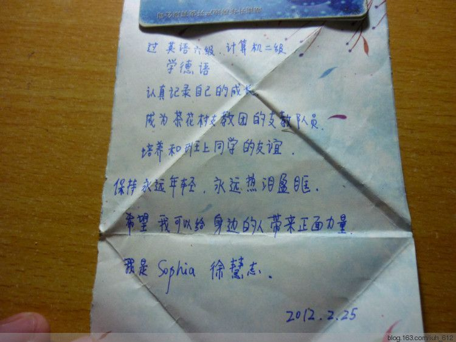

2013-11-03 当年的愿望
目录
刚刚上课回来，打开邮箱，收到大二的班级的一个男生的一封名为“当年的愿望”的邮件，内容写着“今天收拾抽屉的时候发现的它。不忍丢弃，代为珍藏。愿你保持永远年轻，永远热泪盈眶。”附件就是下面这张图。

心里一暖，疲惫顿消。
当初的愿望，谁还记得呢？我早就忘了，却有这样细心的人，替我收好。
那时我们大二，一次班会课上，班长拿出一个许愿瓶和一些彩纸，对我们说，咱们把这个学期的愿望写下来，到期末的时候看看经过一学期的奋斗，咱们愿望是不是都实现了。
于是我们每个人都认真写了愿望。
于是到期末的时候，大家也都分别念出别人写的愿望。
可是之后呢？我忘了。
自己多么幸运啊嗄